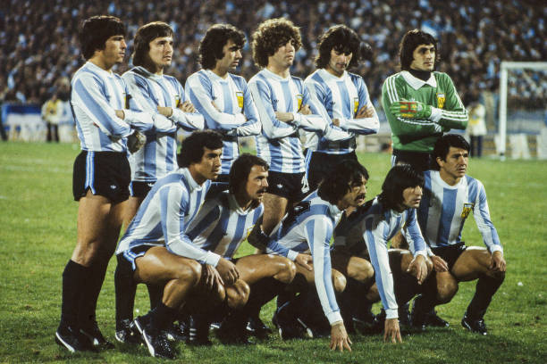
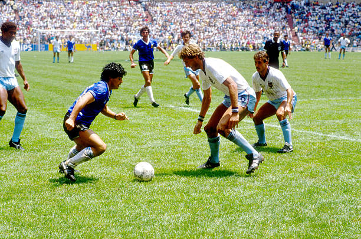
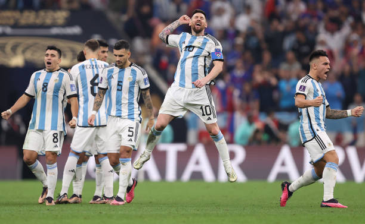

Kempes, determinante para una Argentina que se coronó bajo una lluvia de papeles.
Argentina, que perdió la final de la primera edición de la Copa Mundial de la FIFA™, alcanzó la gloria ante su público 48 años después, propulsada por los goles de Mario Kempes, ganador de la Bota de Oro, y el fervor de su vehemente hinchada, cuya lluvia de papelitos azules y blancos —que se arremolinaban en los estadios de Buenos Aires y Rosario— dejó imágenes para el recuerdo.
Jacinto Cejas 31/07/2023

Equipo que gano el primer campeonato mundial para Argentina
seguir leyendo
Mundial de fútbol 1986: La mano de dios guia a Argentina.
La selección Argentina se proclamó campeona del mundo tras derrotar a Alemania en la final del Mundial de México 1986, torneo en el que Diego Armando Maradona mostró su genio y figura marcando 'el gol del siglo' y tirando de la mano de Dios para ganar a Inglaterra.
Jacinto Cejas 31/07/2023

Maradona consiguiendo el segundo titulo mundialistas.
seguir leyendo
Así ganamos la copa del mundo: El resumen de una consagración épica.
En una jornada para el infarto y con un Lionel Messi en su maximo esplendor, Argentina se coronó campeón mundial por tercera vez en su historia, a 36 años de la gesta de México '86, luego de vencer a Francia por 4-2 en la definición por tiros penales de una increíble final de Qatar 2022, empatada 3-3 al final de 120 minutos.
Jacinto Cejas 31/07/2023

Messi rompió la maldición despues de 36 años.
seguir leyendo